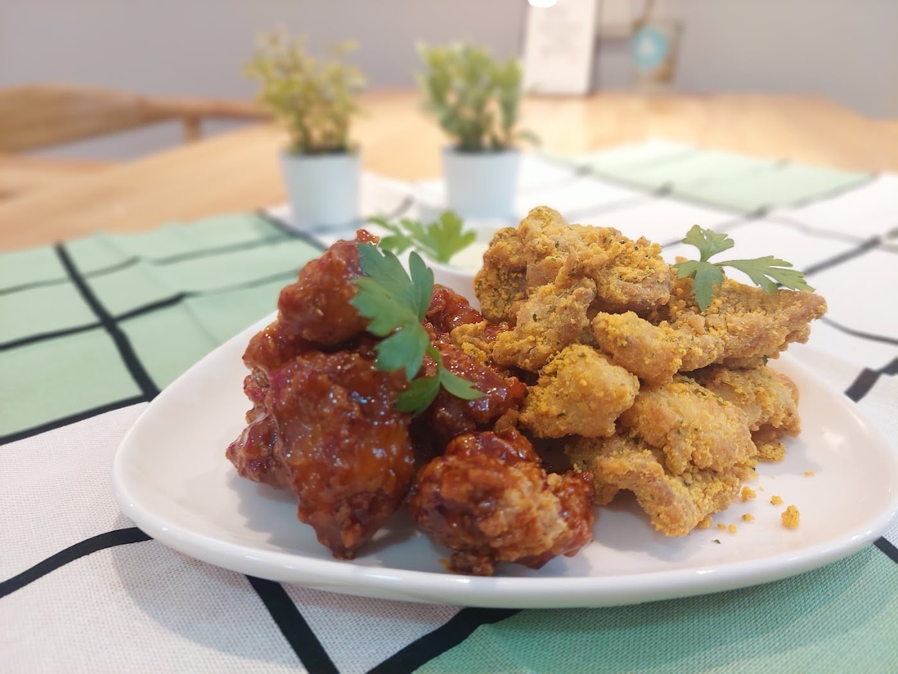
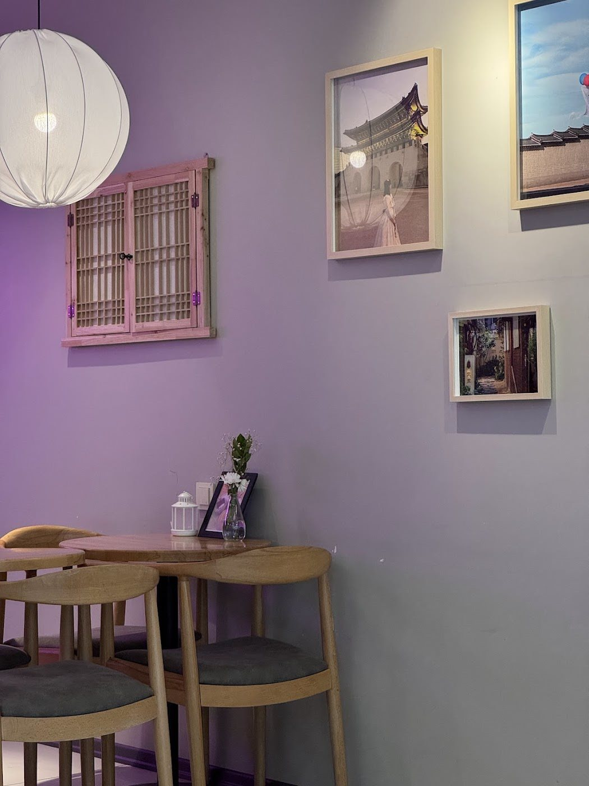
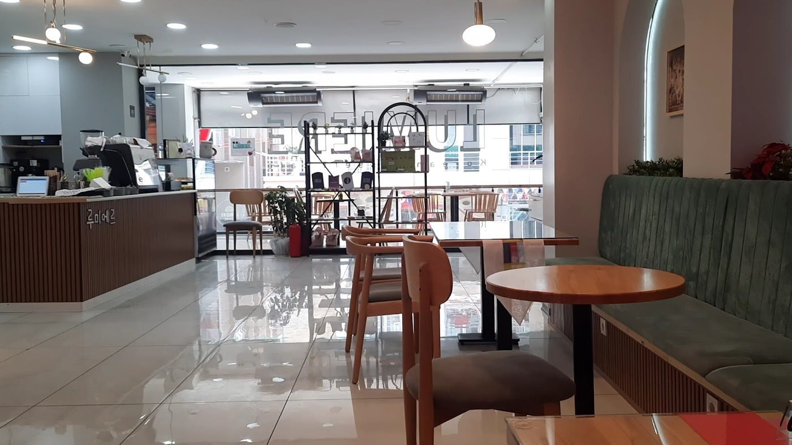

Tteokbokki
Pirinç keki, özel gochujang sosu ve mozzarella peyniri.
Merkez, Avcılar
Tteokbokki, gimbap, soslu tavuklar ve tatlılar. Kore mutfağını merak edenleri masamıza bekliyoruz.
Fiyatlar ve tüm menü
Yemeğin ardından ya da yalnızca bir tatlı için. Paylaşacak bir tabak seçelim.

Yalnızca yemek değil
Kore kültüründen detaylarla dolu mekânımızda yemeğinizi beklerken etrafı keşfedin. Arkadaşlarınızla buluşun, yeni bir lezzet deneyin.
Instagram’da Lumiere
Google yorumları
Biz kardeşimle beraber gittik ve bayıldık buraya. Yemekler mükemmeldi, mekân çok güzeldi, Kore’ye özel kıyafetler de vardı.
En sevdiğimiz yer diyebilirim. Yediğimiz her şey her zaman lezzetli oluyor. Ortam samimi, müzikleri hoş, çocuklar da burada vakit geçirmeyi seviyor.
Biz tavuk çeşitlerine bayıldık. Sonrasında gimbap ve bingsu tatlısını söyledik. Bingsu harikaydı.
Yorumlardan kısa alıntılar. Yazım ve noktalama düzenlenmiştir.
Google’da inceleyinCafe Lumiere / Avcılar
Menü ve ziyaretinizle ilgili sorularınız için Instagram’dan yazabilir veya bizi arayabilirsiniz.
Pazartesi–Cumartesi: 11:30–21:00
Pazar günleri kapalı.